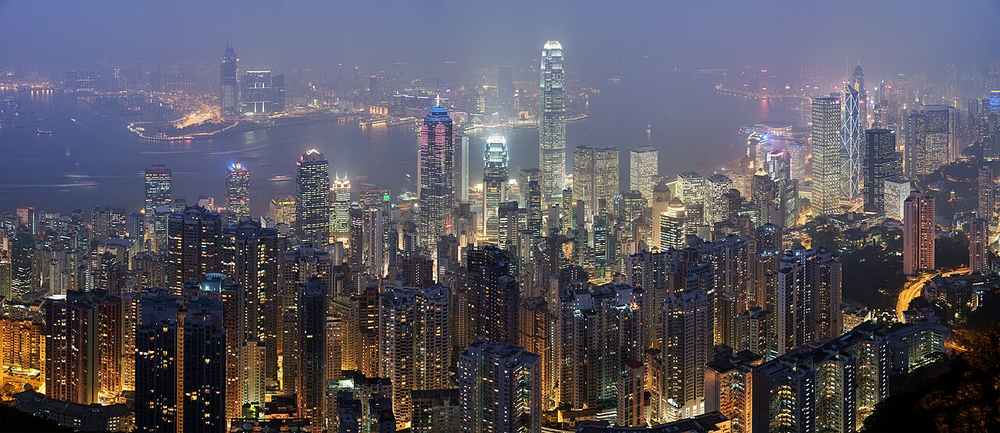

交通策略
- Day1 机场到酒店优先机场快线到九龙站再打车，行李最省心。
- Day2 山顶缆车排队过长时，直接切换 15 路巴士上山。
- Day3 返程打车到九龙站，机场快线到 HKG T1，别压缩安检时间。
CX345 · CX312 · Mong Kok Base
把航班、旺角酒店、三天路线、交通转场和实景照片压进一个可点击的旅行罗盘。以后先改 travel-plan.md，再渲染成网页。

照片跟随当前 Day 切换。它们不是装饰，而是你出门前判断“这站值不值得停”的视觉索引。